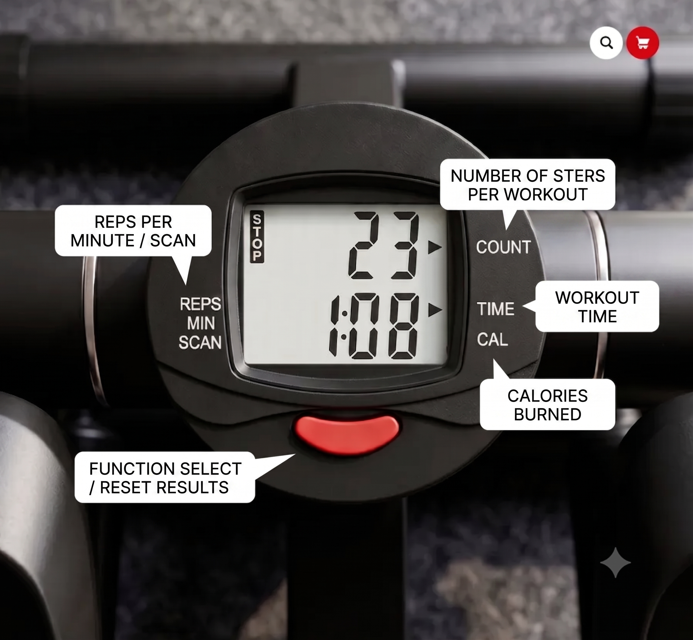
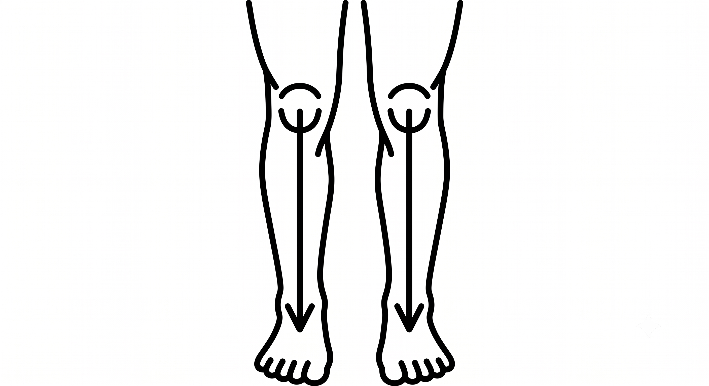
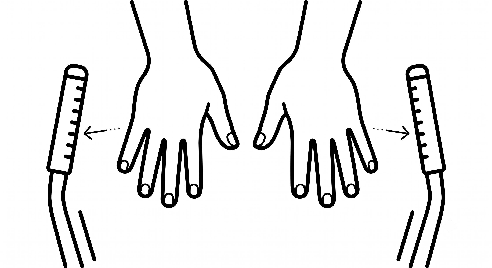
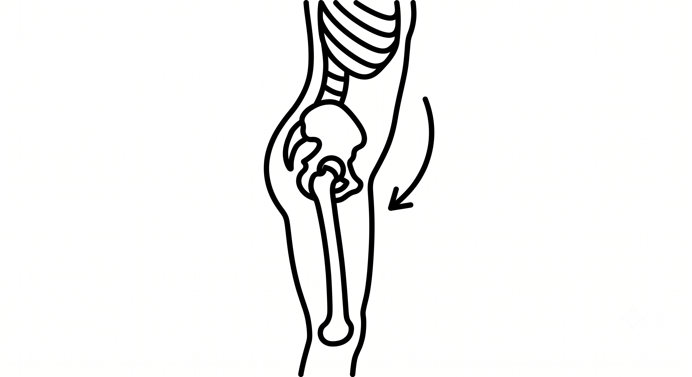
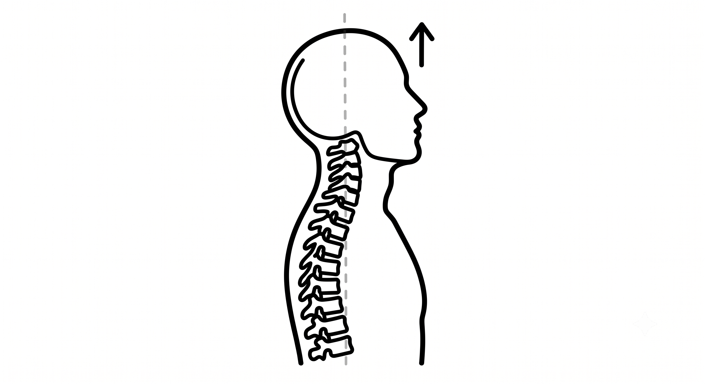
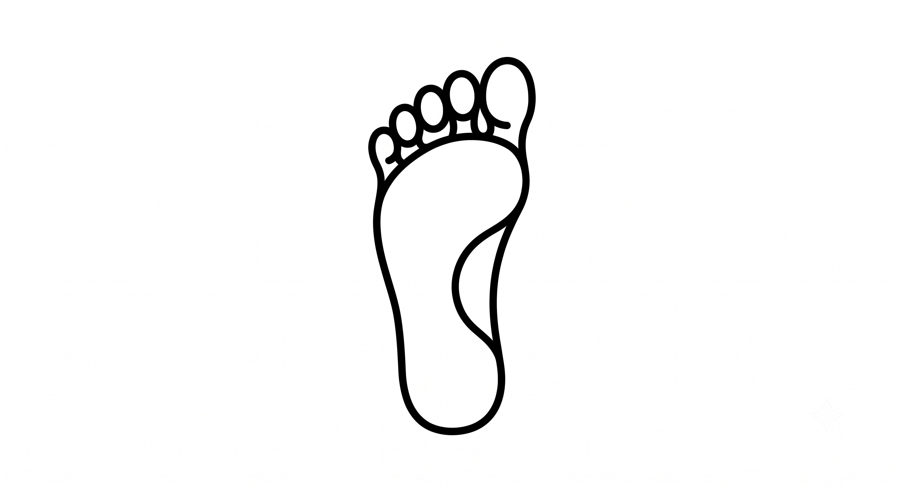
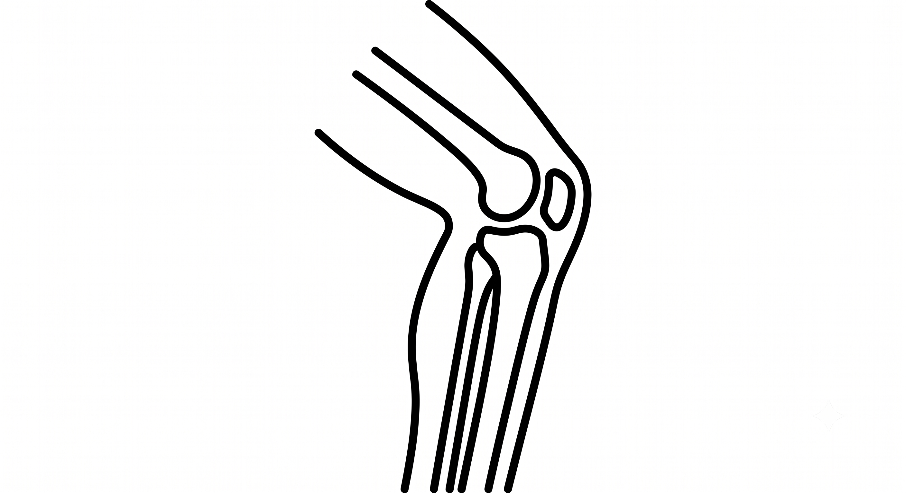
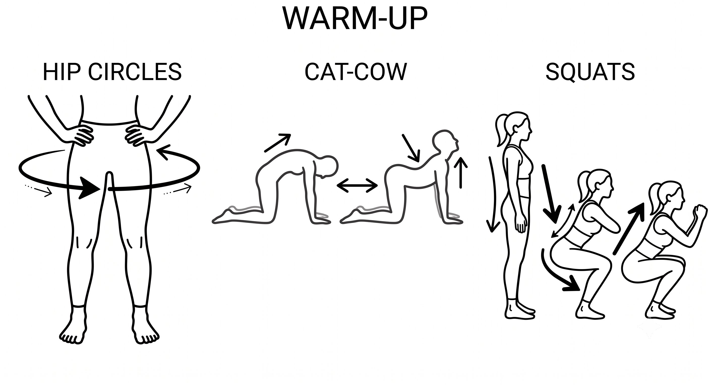

My name is Nastya. I've been training on a stepper for more than a year now. I've lost 10 kg, toned my body, strengthened my back, legs, and glutes, and I've learned one important thing:
The stepper is not just a machine you mindlessly walk on.
If you train correctly on it, the stepper can become a full-body home workout. Not just to add extra steps. Not just to sweat. Not just to check off "I worked out today" on your list. But to actually train: engaging your legs, glutes, back, arms, core, pelvis, breathing, and coordination — and gradually transforming your body.
I am a Pilates trainer. I study biomechanics and work with women who want to lose weight, tone up, and regain a sense of lightness without strict diets and punishing workouts.
I wrote this guide for those who've already bought a stepper or are thinking about buying one, but don't understand:
- •Which stepper to choose
- •How to start if you're a beginner
- •Why your knees or calves hurt
- •Can you train every day
- •How to lose weight on a stepper
- •Why just walking isn't enough
- •How to turn a stepper into a proper full-body workout
01Why I Chose the Stepper
I'm a mom. I work, I study, I run a blog, take care of my house, manage my life — and I don't have endless time for sports.
I don't like the format where you have to get ready, drive to the gym, work out, drive back, change clothes, and squeeze it all into your day without dying from exhaustion.
I needed a format I could do at home. Quickly. Simply. Without travel. Without extra resistance. And with results.
That's how the stepper came into my life.
But I quickly realized: if you just walk on it like you're climbing a mini-staircase, the results will be limited.
You can sweat. You can get tired. You can "add extra steps." But your body doesn't always transform the way you want.
I wanted more. In the 30–40 minutes I have, I wanted to get the maximum from my workout.
That's why I started combining the stepper with what I know from Pilates, biomechanics, and training principles.
This is how the stepper transformed from a "leg machine" into a full-body training tool for me.
02How I Lost 10 kg
I can't say my 10 kg came off in a specific timeframe like "in 2 months" or "in 100 days". For me, it happened gradually over time. And that was important to me.
I have experience with disordered eating, so rapid weight fluctuations, strict diets, heavy restrictions, and quick weight-loss schemes are contraindicated for me.
I barely changed my diet dramatically. I didn't have the story: "I went on a strict diet, cut out everything delicious, started training every day, and lost weight quickly."
No. My results came from something different:
- •I found a home workout format
- •I stopped depending on going to the gym
- •I started training more regularly
- •I figured out how to use the stepper not just for walking, but for proper training
- •I started engaging my whole body
- •I added strength elements
- •I got better at feeling my back, legs, glutes, and core
- •The stress around the idea of "I have to work out" disappeared
For me, this was a huge relief. Before, workouts were often stressful: I had to go somewhere, get ready, find time, adjust my day, find energy. Everything felt heavy.
With the stepper, everything became simpler. I can train at home. Quickly. Without driving. Without needing the perfect day. And it became a system that fits my real life: with a child, work, studies, household chores, and regular tiredness.
That's why the stepper is not just a machine for me. It's a tool that helped me regain movement, lightness, a beautiful body, and the feeling that I can take care of myself without harming myself.
03The Main Mistake: Thinking the Stepper is Only for Legs
Many people see the stepper as a machine "for legs only". You step on, walk, your thighs burn, you sweat, you step off.
But if you only work your legs, you often get an imbalance:
- •The front of the thigh tires
- •Your calves burn
- •Your knees get fatigued
- •Your lower back might tense up
- •Your glutes barely work
- •Your upper body doesn't engage at all
- •The workout gets boring quickly
Then people conclude: "The stepper doesn't work for me." "It's boring." "My knees hurt." "You can't really lose weight on it."
But the problem is often not the stepper. The problem is how you're using it.
You can simply walk on a stepper. Or you can train. And these are two completely different formats.

04Walking on a Stepper vs. Training on a Stepper — They're Different
There's light walking. This is when you simply step on, calmly walk for 10–20 minutes, add some movement, get your blood flowing, add extra activity after a sitting day.
This is a good format. It's valid.
But then there's full-body training. This is where you engage:
- •Your arms
- •Your core
- •Your pelvis
- •Your glutes
- •The back of your thighs
- •Your abs
- •Your back
- •Your chest
- •Your breathing
- •Your coordination
- •Strength elements
- •Dumbbells
- •Different types of walking
It's this format that helps you not just "add steps," but truly transform your body. Your body becomes more toned, engaged, strong, and alive.
05Which Stepper to Choose for Beginners
I get asked this question so often that I decided to answer it once and for all.
In the last year, I've had three steppers:
- •The first one — a light twisting stepper
- •Then a straight stepper
- •Now — a stable twisting stepper that I train on constantly
Don't buy a simple stepper "for beginners" just to buy a different one later when you get better.
It's better to choose a good stepper from the start that will work for you as a beginner and for your future training. This way you'll save money, energy, and avoid reaching the point where the machine no longer suits you in a month.
5.1 High Step Height
The first thing I'd look at is the height of the step. The higher the step, the better you can regulate the load and the more interesting you can make your workouts.
Light steppers often have a very small range of motion: you feel like you're walking, but the step is short, the load is weak, and the muscles don't engage well.
The height of the step directly affects how well you can load your legs, glutes, and your entire body. If the step is too small, over time it might feel too easy and uninteresting.
5.2 Adjustable Resistance
The second important thing is that the resistance should be adjustable. I don't recommend buying a stepper where there's no proper adjustment or only one bolt in front.
Why? Because steppers like that are often too stiff. For a beginner, it's hard to start: your legs aren't used to it yet, your technique isn't set, your knees and feet aren't adapted. And then you hit another problem: when you get used to this resistance, there's nowhere else to increase it.
You end up either walking for 2–3 hours a day to make it harder, or the stepper becomes useless. And I don't think anyone has 2–3 hours.
It's better to choose a stepper with a clear resistance adjustment system. For example, 11 levels: you start at level 1–2, then gradually increase the difficulty. This is much more convenient and safer.
5.3 Stability
The stepper should be stable. Especially if you want to do different types of walking, engage your arms and core, and do coordination exercises.
We don't hold onto handrails on the stepper because most don't have them. So the machine itself needs to stand firmly.
If the stepper is flimsy, you'll tip forward or sideways, and instead of training, you'll be constantly catching your balance. This is not only uncomfortable but also messes up your technique.
5.4 Pedal Length
Always check the pedal length. If you have a larger shoe size, a short pedal will be uncomfortable.
I had a straight stepper with a short footplate, and it wasn't comfortable: my foot didn't fit the way I needed it to, and I was constantly adjusting. When your foot is in an uncomfortable position, it affects your whole technique: your knees, pelvis, balance, and how the load feels.
So the pedal should be long enough and comfortable for your foot.
5.5 Cable and Mechanism Quality
Another important thing is the cable. I've had girls send me videos where their stepper cable snapped.
Often the problem is that the mechanism has a wheel or round element the cable constantly rubs against. During training, the mechanism heats up, the cable heats up, and over time it can just snap.
So look at how the mechanism is built. The fewer parts the cable rubs against, the better.
5.6 Twisting or Straight?
I recommend a twisting stepper specifically.
You can train on a straight stepper, but a twisting one gives you more options:
- •Better core engagement
- •More variety in walking styles
- •You can actively work your waist
- •Your workout becomes more diverse
- •It's easier to turn regular walking into proper training
If your goal is not just to "add steps" but to really tone your body, I'd choose a twisting one.
Quick Checklist Before Buying
- Is the step height good
- Is there proper resistance adjustment
- Is the stepper stable
- Are the pedals long enough
- Does it match your weight
- Does it feel flimsy
- Does the cable mechanism look weak
- Is it a twisting one if you want more training options
Don't buy the simplest stepper just because you're a beginner. For a beginner especially, it's important that the stepper is comfortable, stable, has adjustable resistance, and normal range of motion. Because if it's uncomfortable, hard, painful, or boring — you'll just abandon it after a week. But a good stepper can become a machine you'll train on for a long time, safely, and with results.
06How to Start as a Beginner
If you just bought a stepper, don't immediately jump on for 40 minutes every day. Even if it seems: "What's so hard? I'm just walking."
The load on a stepper is specific. Your knees, feet, calves, pelvis, and muscles need time to adapt.
Start gradually.
Week 1: 5–10 minutes of calm walking.
Week 2: 10–15 minutes.
Week 3: 15–20 minutes.
After that, you can gradually increase time and add exercises.
Main rule: Don't be a hero. If your body says "I've had enough for now" — it's not weakness. It's normal adaptation.
It's better to do 10 minutes and want to do it again tomorrow than to push yourself for 40 minutes, hate the stepper, and quit.
07Can You Train on a Stepper Every Day?
You can, but it's important to understand what you're doing every day.
If it's light, casual activity — you can do it more often. For example, 10–20 minutes of calm walking to move around, get your blood flowing, add activity to your day.
But if you want real results: tone your glutes, legs, back of your thighs, back, improve your body shape — you need proper workouts.
And proper strength workouts on a stepper are better done every other day so your muscles have time to recover.
Because your body changes not just during training. Your body changes during recovery after training.
If you do heavy loading every day, you'll quickly hit exhaustion, tight legs, pain, and loss of motivation.
08Main Technique Rules on a Stepper
The biggest mistake is thinking you just need to "move your feet" on a stepper.
No. If you want the stepper to work for weight loss, tone, glutes, legs, back, and your whole body, it's important not just to walk, but to move correctly.
Here are the main rules I always give to my clients.
8.1 Knees Point Straight
Your knees shouldn't collapse inward. This is one of the most important things because your knee position affects not only comfort during training but also safety.

If your knees go inward, the load distributes wrong: your thighs might get tight, and you might feel uncomfortable sensations in your knees, feet, or lower back.
While walking, constantly check: your knees point where your feet point.
8.2 Arms Work Actively

Your arms don't hang. If your arms just dangle or hang by your sides, you lose a huge part of your workout.
When you actively engage your arms, your upper body immediately turns on: your back, shoulders, chest, abs, coordination.
And your workout stops being "just for legs" and becomes a full-body session.
8.3 Your Whole Body Moves
On a stepper, you shouldn't have a situation where only your knees move and everything else is frozen.
You move as a whole. Your core works, your upper body works, your arms work, your pelvis works.
This is what turns the stepper from boring walking into a real full-body workout.
8.4 Your Pelvis Participates in the Movement

Your pelvis shouldn't be locked. If it doesn't move, the load often goes the wrong way: into your knees, the front of your thighs, your calves, or your lower back.
When your pelvis is properly engaged, your glutes, back of your thighs, and core start working better. And your body gradually becomes more toned, alive, and firm.
8.5 Don't Walk With Just Your Knees

If you feel that on a stepper only your knees move and everything else stays still — your technique probably needs fixing.
This usually feels like the stepper is heavy, uncomfortable, your legs get tight fast, and your body doesn't transform much.
Our goal is not to mechanically push the pedals, but to create coordinated movement of your whole body.
8.6 Gradually Progress in Load
For your body to change, the load has to increase. But not suddenly.
You don't need to suddenly set a hard level, walk for an hour, and then lie around with tight legs.
Progression should be reasonable:
- •First you learn the technique
- •Then you increase the time
- •Then you add exercises
- •Then you raise the difficulty
- •Then you bring in dumbbells, arms, core, more complex combinations
Your body likes gradualness. That's how you can train for a long time, safely, and with results.

Full foot on pedal
Soft knees09What to Do If Something Hurts
Nothing should hurt on a stepper. At most, you might feel pleasant tiredness, muscle work, sweat, faster breathing.
If pain appears — it's a signal that something's wrong.
Common causes:
- •Knees collapse inward
- •Body weight goes the wrong direction
- •Foot is unstable
- •You're pressing too hard with your toes
- •Pelvis isn't engaged
- •Glutes aren't working
- •Lower back is taking the load
- •Upper body is tense
- •You increased workout time too quickly
- •You're doing heavy loading every day without recovery
Sometimes knee pain isn't just about the knees. It can be connected to your feet, pelvis, posture, your regular walking pattern, tension in your front thigh, or weak glute work.
That's why proper technique on a stepper is very important.
10If Your Calves Cramp or Your Front Thigh Gets Tight
This is one of the most common stories. Someone gets on a stepper, walks for 5–10 minutes — and that's it: calves are burning, front thigh is tight, can't continue.
Usually this means the load distributes unevenly.
Possible reasons:
- •Too much pressure on your toes
- •Weak glute engagement
- •Knees go forward or inward
- •Foot position is awkward
- •Pace is too fast
- •Your body hasn't adapted yet
- •You're only using your legs, not your core and pelvis
What to do:
- •Slow down
- •Shorten your workout time
- •Watch your knee position
- •Add foot warm-up
- •Don't do heavy workouts every day
- •Learn to engage your glutes, pelvis, and back of thighs
If only your calves cramp — this doesn't mean "it's supposed to be like this." It's a reason to check your technique.
11How the Stepper Helps You Lose Weight
The stepper helps you lose weight not because it's magical. It helps because:
- •It increases your daily activity
- •It gives cardio load
- •It helps you burn more energy
- •It strengthens your muscles
- •It improves your body tone
- •It helps reduce puffiness
- •It makes training accessible at home
- •It helps add movement to your regular life
But here's an important point: weight loss is not just about the stepper.
The results are affected by:
- •Nutrition
- •Sleep
- •Stress
- •Consistency
- •Recovery
- •Your cycle
- •Your overall body condition
- •Daily activity level
That's why I'm against the approach "kill yourself on the stepper and eat nothing." I'm for a system where your body gets movement, nutrition, and recovery.
12Why You Don't Need to Eat Only 1200 Calories
Very often women try to lose weight this way: eat less → get tired → lose control → blame themselves → start over Monday.
But if you eat too little, sleep badly, work a lot, sit with kids, manage a house, and also try to train — your body just doesn't have enough energy.
And then it starts asking for quick sources: sugar, bread, chips, cookies, evening snacking.
In my system, nutrition is not about hard restrictions. It's about:
- •Eating enough
- •Having proper main meals
- •Not being afraid of food
- •Adding protein, vegetables, carbs, fats
- •Not turning weight loss into punishment
Because when your body is properly fed, it's easier for it to move, recover, and lose weight.
13How Often to Train for Results
Rough outline:
2–3 times per week for 10–20 minutes.
3–4 times per week for 25–40 minutes.
3 proper workouts per week + light activity on other days.
Important: if your workout was intense and your legs are tight, give yourself recovery the next day instead of pushing hard again.
You don't need to suffer on the stepper every day. You need a system you can repeat for a long time.
14What to Do Before Training
Before training it's important to:
- •Check that the stepper is standing stable
- •Wear comfortable shoes or train the way you feel comfortable
- •Put water nearby
- •Start with a gentle warm-up
- •Don't get on the stepper right after a heavy meal
- •Check how you're feeling
- •Set up to move well, not to "survive"
Training shouldn't start with violence against yourself. It's better to enter gently than to start hard and regret it after 5 minutes.

15What to Do After Training
After training:
- •Slowly recover your breathing
- •Don't sit down suddenly
- •Drink water
- •Do a gentle cool-down
- •Notice how your knees, feet, back feel
- •Don't blame yourself if you did less than planned
It's better to do 15 minutes well than 40 minutes in pain and then quit for two weeks.
16My Safe Stepper Training Rules
- Nothing should hurt
- Beginners start gradually
- Technique is more important than speed
- Knees must be controlled
- Arms don't hang — upper body works
- Pelvis isn't locked — it participates in movement
- If only calves cramp — look for the mistake
- If back hurts — check your pelvis and core position
- Strength workouts include recovery
- You don't need to "die" on the stepper every day
- Nutrition should support training, not get in the way
- The stepper is not punishment for food — it's a way to reclaim your body
17What Results You Can Get
With regular training and proper nutrition, you might notice:
- •Weight loss
- •Reduced puffiness
- •Smaller measurements
- •Tighter legs
- •Firmer glutes
- •Lightness in your body
- •More energy
- •Better back feeling
- •Improved posture
- •A habit of moving at home
- •More confidence in yourself
For me personally, the stepper became a tool that helped me lose 10 kg and tone my body. But most importantly, I stopped seeing training as punishment. It became a way to return energy, strength, and a feeling that I'm back in my body.
18Why I Succeeded
I didn't succeed because I became perfect. Not because I always have motivation. Not because I never get tired. Not because I live in an ideal routine.
I succeeded because I found a format that works for my real life.
A life with a child. Work. Studies. Daily routine. Tiredness. Ordinary days. Imperfect nutrition. And no extra two hours to drive to the gym.
The stepper became for me not a way to punish myself for food, but a way to quickly return to my body. Move. Turn on. Sweat. Feel my muscles. Get myself together. And gradually change myself without violence.
That's why I love this format so much.
19Why I Created a Stepper Marathon
When I understood how powerful the stepper can work if you approach it not as boring cardio but as a full training system, I created my marathon.
It's not just "walk on a stepper."
Inside the marathon we train. I combined:
- •Stepper work
- •Pilates
- •Biomechanics
- •Technique work
- •Nutrition without strict diets
- •Foot exercises
- •Pelvis work
- •Upper body work
- •Strength and cardio training
- •Error breakdowns
- •Support and clear system
I've already run several sessions, and over 100 women have tried this approach. Many came thinking: "I thought you could only walk boring on a stepper." And then wrote that they sweated for the first time in 10 minutes, felt their glutes, understood their technique mistakes, and fell in love with the stepper.
20What's Inside My Marathon
If after reading this guide you understand you want not just to walk on a stepper but to train with a clear system, technique, and support, you can join my marathon.
Inside the marathon:
- •5 diverse stepper workouts
- •Individual technique breakdown for each participant
- •Body analysis and individual error correction
- •Nutrition during and after the marathon
- •Pelvic floor workout
- •Upper back and chest opening workout
- •Anti-cellulite massages
- •Personal consultation with me
- •Support and answers to questions
- •Special section on laziness: why laziness isn't usually about laziness at all
My goal is not just to give you workouts. My goal is to help you understand your body, learn to move safely, stop being afraid of the stepper, see your mistakes, and finally start getting results from it.
Because the stepper can be a machine that sits in the corner. Or it can become your home tool for weight loss, tone, energy, and a beautiful body.